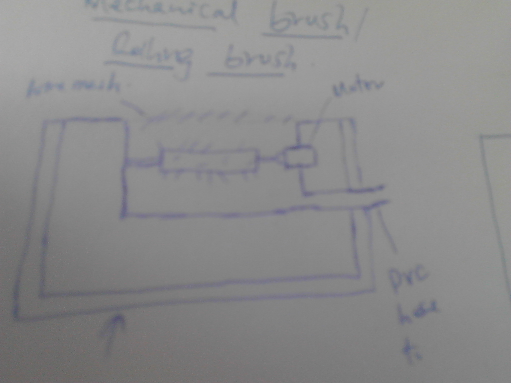

My idea was concieved in Gearbox to add an alternative to the neatly pinned capet on the floor.In order to keep the carpet safe from unnecessary dust from many walk-in visitor and staff shoes, this great idea was born.
To remove dust particles stuck on shoes
This Electric Door Mat (EDM) is designed to suck dust from the shoes at the entrance. The equipment will be placed on the door way exacly where your door mat is currently. On arrival, you are expected to stand on it for few minutes as your dust are sucked away
By stepping on it, the sensor switch will activate the power on and the the process begins.
We will use three different units put together to cork as one. These are;
These will be three in number placed slightly below the foot rest. They are connected to the motor which using a pulley drives other two to make sure that they rotate as they scrab off the the dust.
Using the sensor switch, the power which drives the motor which in turn makes the brushes to rotate will be automatically turned on while stepped on
Here, a vaccume cleaner will be used to effect the process. The Vacuum cleaner will suck away the dust which has been scrabbed of by the brushes. This will take care of the Environmental management which relates to cleanliness and health as well
This is the dust Collection Point. All the dust brushes ans sucked will be all collected here for disposal at later time.